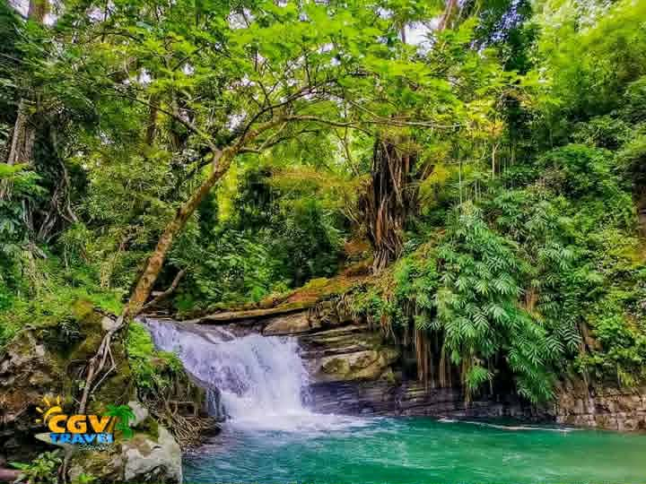

The falls and basin
The main cascade drops into a wide basin that's calm enough for a swim and deep enough for visitors to try cliff-jumping from the surrounding rock.
Read about the fallsBarangay Daligan · Santa Cruz, Ilocos Sur
A two-tier waterfall hidden in the forested hills east of Santa Cruz, reached by a river-crossing trek that locals still call the town's best-kept adventure.

Kagutungan Falls has been developed just enough to be comfortable — concrete gazebos, a comfort room,
and resting huts near the top — while keeping the forest around it untouched.
Kagutungan Falls is surrounded by lush vegetation and towering trees, creating a cool and peaceful atmosphere.
The waterfall cascades into a clear, natural pool where visitors can swim and relax.
The area is characterized by rocky formations and fresh mountain water flowing from the upland forests of Santa Cruz.
During the rainy season, the water volume becomes stronger, while in the dry season it remains calmer and clearer.
The main cascade drops into a wide basin that's calm enough for a swim and deep enough for visitors to try cliff-jumping from the surrounding rock.
Read about the fallsGetting there means crossing the Kagutungan river on foot, following a trail that winds past irrigation canals and small cascades along the way.
See the full routeAsk your guide about Sinminublan Pool and Sinmimbaan Cave, two more natural landmarks a further walk from the falls for visitors with extra time.
Preview the areaThe trail crosses the river and passes through overgrown brush in places, so wear shoes with grip and clothes you don't mind getting wet or scratched. Bring drinking water, a change of clothes, and cash for the tricycle and registration.
Contact the barangay tourism desk to ask about current trail conditions